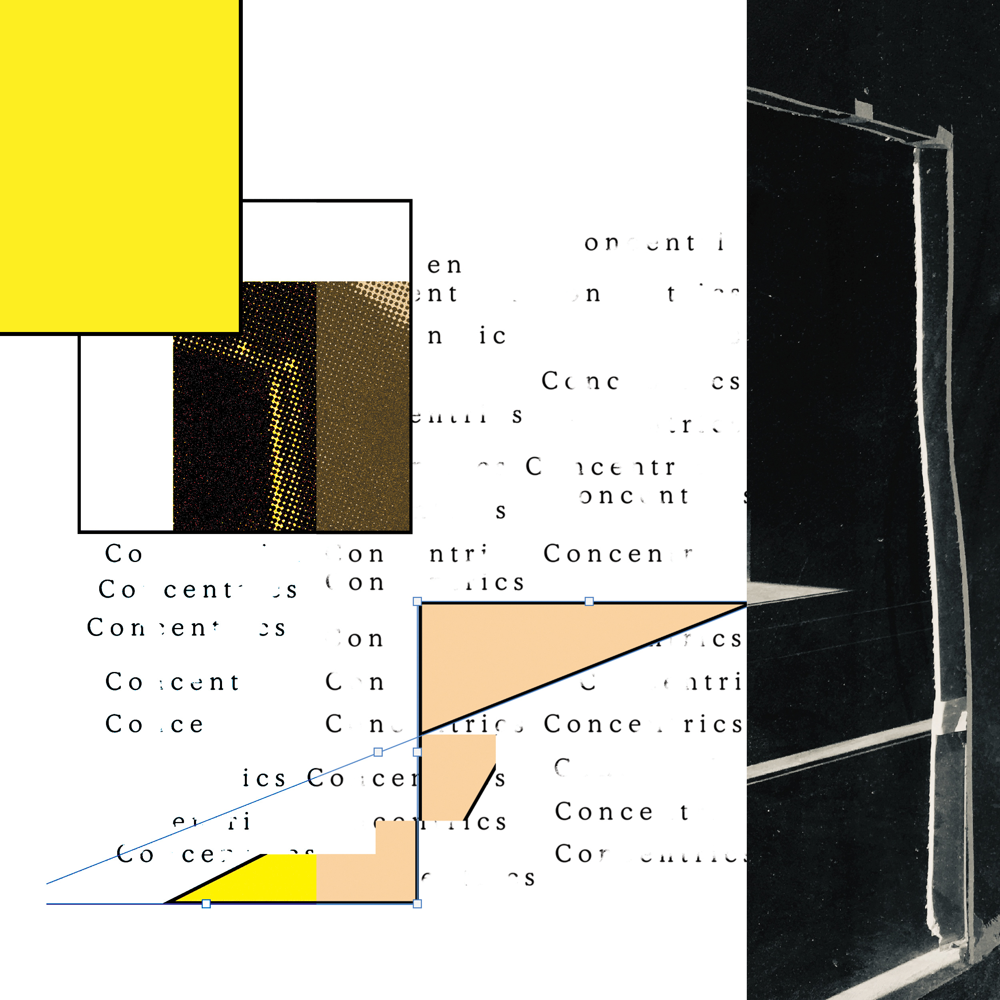
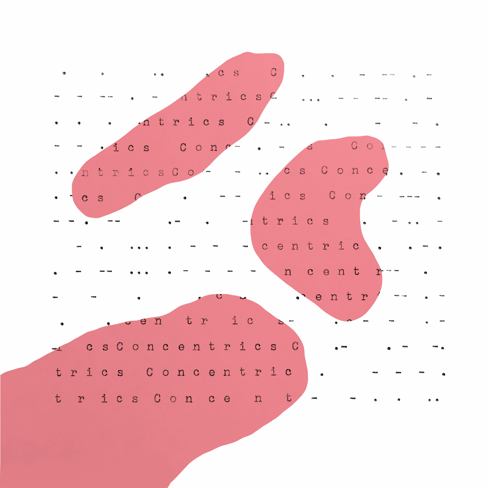
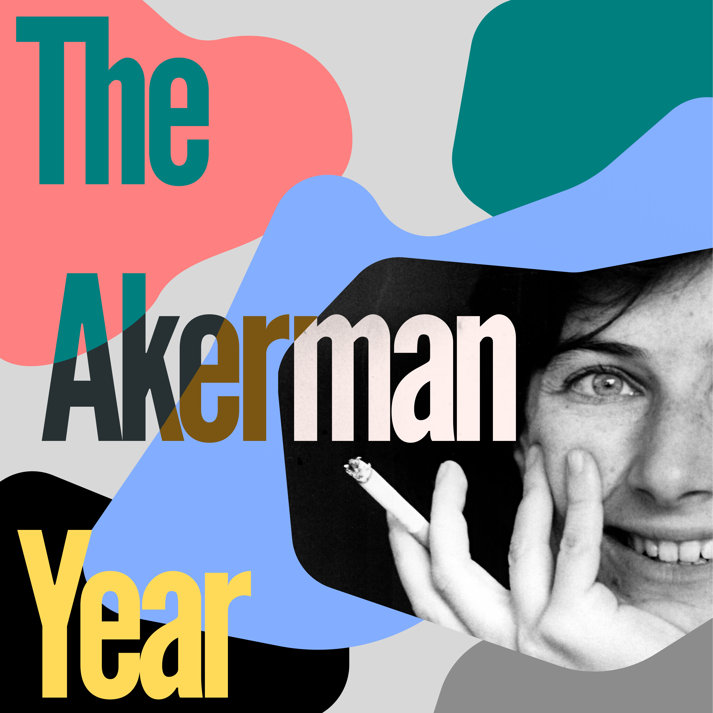
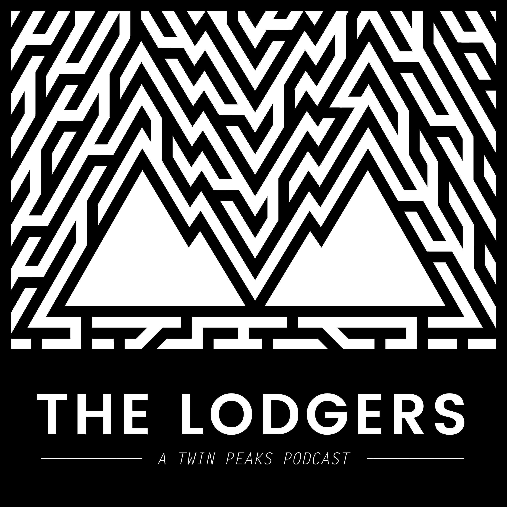
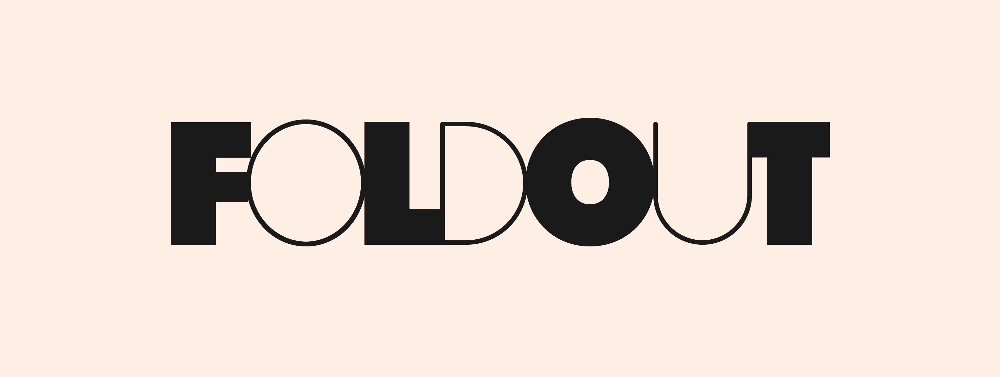
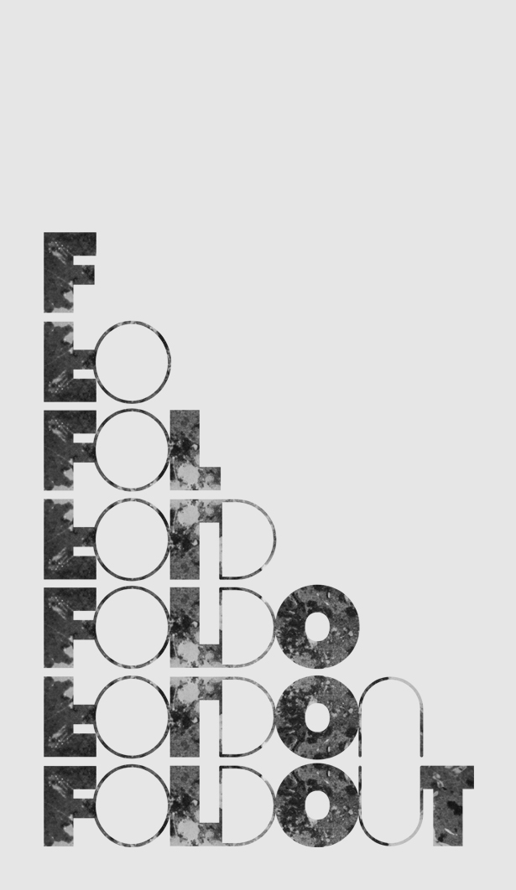
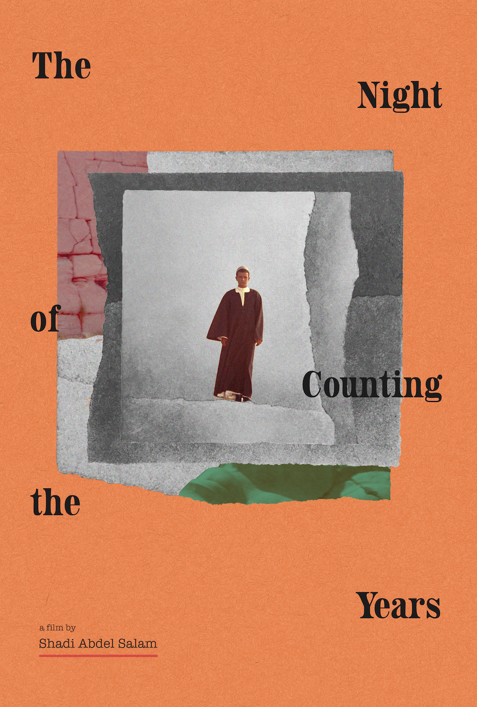

hey there. i'm olivier, a mile-end based guitarist seeking a fiddle player, a double bassist, and a drummer to occupy that cosmic zone where country, free jazz, and minimalism intersect. other left-field instruments — pedal steel, auto-harp — are definitely welcome. i don't have a rehearsal space, so the only thing i'm bringing to the table is an idea. if this idea speaks to you, and if you happen to like anything you hear in the links below, get in touch and maybe we can find a way to cobble some sonic magic together.
concentrics
record cover (+ alt) for the sixth installment of glia's concentrics series.  the akerman year
show art for kate rennebohm + simon howell's podcast on chantal akerman the lodgers
show art for kate rennebohm + simon howell's podcast on twin peaks foldout films
A graphic identity for the L.A.-based production company.  the night of counting the years
Self-commissioned image here
poster for interdisciplinary conference & exhibition at